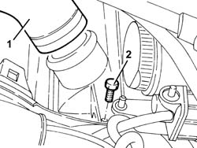
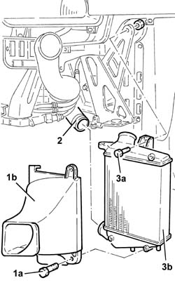
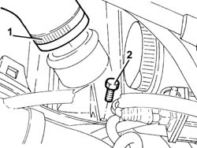
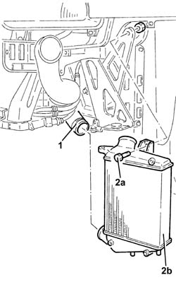
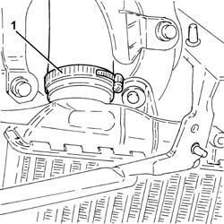
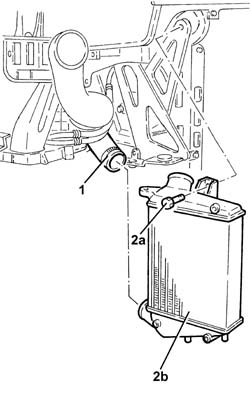

1048B50 turbo charger intercooler - r + r
- Path
- Procedures > 10 ENGINE > 1048 ENGINE AIR SUPPLY CIRCUIT > 1048B pressure air circuit > 1048B50 turbo charger intercooler - r + r
- Kind
- repair procedure (removal / refitting; the operation number is the code)
- Applies to
- engines: 1.9 JTD 8v , 1.9 JTD 16v, 2.4 JTD 10v, 2.4 JTD 20v; all production periods
- Interactive page
- https://sloeber94.github.io/elrnDB-a156/en/#/3237792
Applies to: engines: 1.9 JTD 8v , 2.4 JTD 10v; all production periods
 Removing
Removing
 Refitting
Refitting1. Disconnect the air outlet sleeve from the turbocharger air/air heat exchanger.
2. Unscrew the turbocharger air-air heat exchanger bolt indicated.

Applies to: engines: 1.9 JTD 8v , 2.4 JTD 10v; all production periods
Raise the car on a lift.
1. Unscrew bolts (1a) and the nut and remove the dynamic heat exhanger air intake duct (1b).
2. Disconnect the air inlet sleeve from the turbocharger air/air heat exchanger.
3. Undo the remaining bolt (3a) and remove the turbocharger air-air heat exchanger (3b).

Applies to: engines: 1.9 JTD 8v , 2.4 JTD 10v; all production periods
Refitting
RemovingFit the turbocharger air-air heat exchanger and secure with a bolt.
Connect the air intake sleeve to the turbocharger air-air heat exchanger.
Fit the heat exchanger dynamic air intake duct and secure with the bolts and nut.
Lower the car using the lift.
Tighten the remaining turbocharger air-air heat exchanger bolt.
Connect the air outlet sleeve to the turbocharger air-air heat exchanger.
Applies to: engines: 1.9 JTD 16v; all production periods
Removing
RefittingProceed with removal 7055A43 central front grille - r r .
Proceed with removal 7055A41 RIGHT FRONT GRILLE - R.R. .
Proceed with removal 7210E10 R.R. FRONT BUMPER .
Proceed with removal 1048B48 heat exchanger duct - r r .
Proceed with removal 1016A10 sound-proofing cover - r + r .
1. Loosen the band and disconnect the air supply duct from heat exchanger to inlet manifold, heat exchanger side.
2. Undo the turbocharger intercooler retaining bolts indicated.

Applies to: engines: 1.9 JTD 16v; all production periods
1. Loosen the band and disconnect the air supply hose between the turbocharger and the heat exchanger, heat exchanger side.
2. Undo the remaining bolt (2a) and remove the turbocharger intercooler (2b) after releasing it from the lower retaining bushes.

Applies to: engines: 1.9 JTD 16v; all production periods
Refitting
RemovingRefit the turbocharger intercooler. Fasten the pins to the lower bushes and secure with the bolt.
Connect the air supply hose between the turbocharger and the intercooler, intercooler side and tighten the band.
Tighten the turbocharger intercooler bolts.
Cconnect the air supply hose from heat exchanger to inlet manifold, heat exchanger side, and tighten the band.
Proceed with refitting 1016A10 sound-proofing cover - r + r .
Proceed with refitting 1048B48 heat exchanger duct - r r .
Proceed with refitting 7210E10 R.R. FRONT BUMPER .
Proceed with refitting 7055A41 RIGHT FRONT GRILLE - R.R. .
Proceed with refitting 7055A43 central front grille - r r .
Applies to: engines: 2.4 JTD 20v; all production periods
Removing
RefittingProceed with removal 7055A43 central front grille - r r .
Proceed with removal 7055A41 RIGHT FRONT GRILLE - R.R. .
Proceed with removal 7210E10 R.R. FRONT BUMPER .
Proceed with removal 5540B16 FRONT LIGHT CLUSTER with direction indicator (one), left or right - R.R. (Left side).
Proceed with removal 1048B48 heat exchanger duct - r r .
1. Loosen the band and disconnect the air supply duct from heat exchanger to inlet manifold, heat exchanger side.

Applies to: engines: 2.4 JTD 20v; all production periods
1. Loosen the band and disconnect the air supply hose between the turbocharger and the heat exchanger, heat exchanger side.
2. Undo the bolt (2a) and remove the air-air turbocharger heat exchanger (2b) after releasing the lower pins.

Applies to: engines: 2.4 JTD 20v; all production periods
Refitting
RemovingReplace the supercharging air/air heat exchanger back in its housing and secure it using the bolt.
Connect the air supply hose between the turbocharger and the intercooler, heat exchanger side and tighten the band.
Connect the air supply hose from heat exchanger to inlet manifold, heat exchanger side, and tighten the band.
Proceed with refitting 1048B48 heat exchanger duct - r r .
Proceed with the refitting 5540B16 FRONT LIGHT CLUSTER with direction indicator (one), left or right - R.R. (Left side).
Proceed with refitting 7210E10 R.R. FRONT BUMPER .
Proceed with refitting 7055A41 RIGHT FRONT GRILLE - R.R. .
Proceed with refitting 7055A43 central front grille - r r .
Topics linked from this page (7)
- 1016A10 sound-proofing cover - r + r
- 1048B48 heat exchanger duct - r r
- 5540B16 FRONT LIGHT CLUSTER with direction indicator (one), left or right - R.R.
- 7055A41 RIGHT FRONT GRILLE - R.R.
- 7055A43 central front grille - r r
- 7055B10 Front BUMPER - R.R.
- 7210E10 R.R. FRONT BUMPER